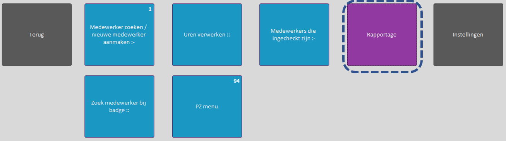

Uren op projecten
Voor uren van IT en R&D is er de wens vanuit de accountants om uren op projecten te boeken. Op deze pagina is wat uitleg te vinden hoe er met projecten gewerkt kan worden.
Aanmaken van projecten
Het aanmaken van projecten is mogelijk in montamoney en gomonta. In onderstaand stukje zal beschreven worden hoe dit er in montamoney uitziet. In gomonta moeten rechten eerst aangepast worden, zodat ook IT leidinggevende in gomonta projecten kunnen aanmaken of wijzigen. Nu kan alleen HR dat.


Projecten om uren op te boeken zijn in dit projecten scherm aan te maken.
Achteraf toekennen van projecten aan uren
Wanneer er geen projecten gekozen zijn tijdens het uren verwerken, is het ook mogelijk om achteraf projecten aan uren toe te kennen. Dit is mogelijk in montamoney.



Export om te kijken hoe volledig project administratie is.
In hetzelfde scherm waarin projecten kunnen worden toegekend aan geboekte uren, zit ook een exportmogelijkheid om te zien of de uren van medewerkers een project hebben. Het idee is dat er een of meer leidinggevenden gekozen worden en dat er dan van de medewerkers die bij deze leidinggevenden horen een export van de uren en projecten wordt gemaakt. Filteren in deze excel op uren zonder project geeft de uren waar nog een project zou kunnen worden ingevuld.